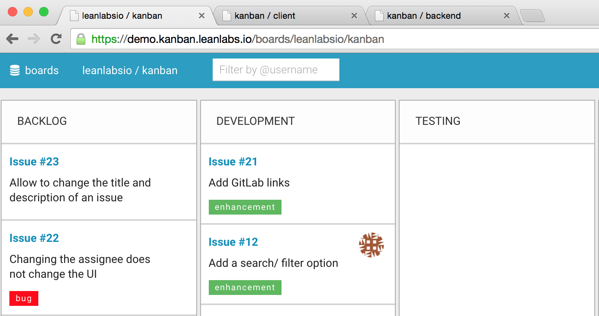
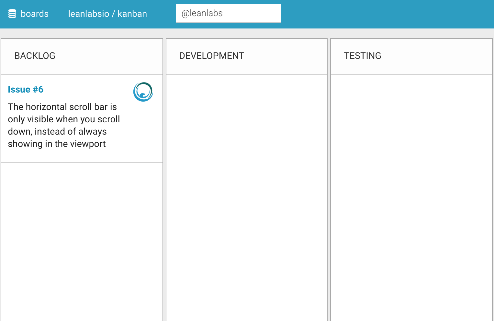
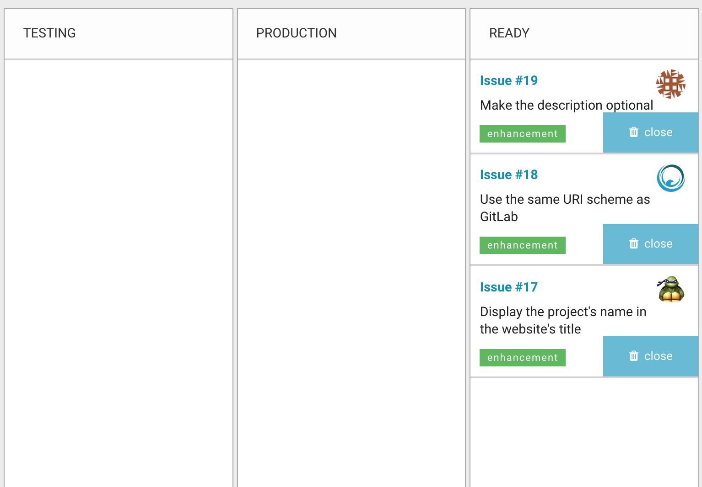

Moving forward
Two months ago was our initial release. We got a lot of feedback and have implemented several new features.
Today we are proud to announce about 1.0.7 release of LeanLabs Kanban with several improvements:
Simplified URI scheme. You can navigate to board by “namespace/reponame” in URI (e.g. demo.kanban.leanlabs.io/boards/leanlabsio/kanban)
Cards ID in URI are GitLab issues ID. Example demo.kanban.leanlabs.io/boards/leanlabsio/kanban/cards/18 and gitlab.com/leanlabsio/kanban/issues/18.
Simplified Tab navigation in browser window.

You can filter card by user name. We implemented simple filter by username for cards on board with “@” annotation. To show only cards assigned to user with name “user” you can type “@user” in filter field and press “Enter”. To show all cards that have assignee you can simply type “@”.

Simplified validation rules when creating a card reflecting GitLab rules. Now you can leave “Description” blank when creating card.
Fast cards close. We added "Close" button for cards in last column. You don't need open card for to close it.

We are pleased that our project moves forward, we hope that these updates will be useful to you.